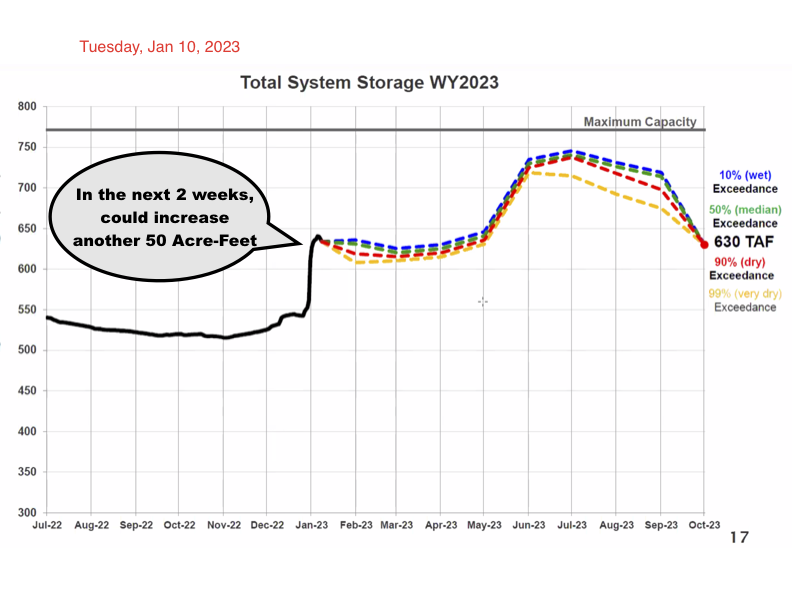
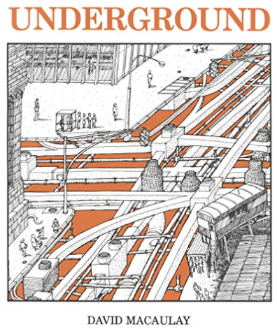
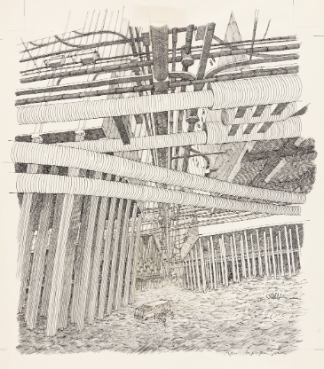

Thirty lectures by UC Berkeley and East Bay Municipal Utility District survey how a billion-dollar advanced water and power utility operates today, while planning and building for the next 100 years.
Contents
Thirty lectures by UC Berkeley and East Bay Municipal Utility District survey how a billion-dollar advanced water and power utility operates today, while planning and building for the next 100 years.#
How to incorporate innovations in materials, sensors, data networks, machine learning, and other new technologies for resilience
How to rebuild and redesign aging dams, reservoirs, pipes and pumps
How to build public support for investment in critical, but invisible, infrastructure
Note
This book is interactive, which means components of a page pull in real-time data from online sources, perform data analysis, and show the results. Data is open. How code transforms data into answers is clearly visible. The code is visible in active cells, and can be run to replicate the results.
What A Difference A Week Makes: From Drought to Floods#

Note
Six atmospheric rivers brought EBMUD out of drought restrictions. Three more comining in January, with Sierra snow depth doubling, raises system storage to near-capacity. Summer snow melt predictions almost double. Graph shows model predictions for alternate possibilities, from January to October 2023. Similar pattern last year had drought after March, so these predictions are conservative. Most of this rainfall cannot be stored. Some reservoirs must be drained to avoid overtopping. In future editions, today’s system storage will draw directly from real-time levels at Pardee and other reservoirs. Will add estimates of total water flow to Pacific and groundwater replenishment.
from matplotlib import rcParams, cycler
import matplotlib.pyplot as plt
import numpy as np
plt.ion()
<contextlib.ExitStack at 0x7fc8806970d0>
import os
# Convert 630 Total Acre-Foot to gallons
TAF = 630
gallons = 630 * 325853.302098
gal = f'{round(gallons):,}'
print(type(gal))
print("630 Acre-Feet = ", gal , "gallons")
#os.system('say{:,}'.format(gal))
os.system('say{:,}'.format(gal) )
<class 'str'>
630 Acre-Feet = 205,287,580 gallons
---------------------------------------------------------------------------
ValueError Traceback (most recent call last)
Cell In[2], line 9
7 print("630 Acre-Feet = ", gal , "gallons")
8 #os.system('say{:,}'.format(gal))
----> 9 os.system('say{:,}'.format(gal) )
ValueError: Cannot specify ',' with 's'.
%pip install folium
import folium
m = folium.Map(
location=[37.701, -121.073],
zoom_start=8,
tiles='Stamen Terrain'
)
folium.Marker(
location=[38.2574, -120.8502],
popup='Pardee Dam',
icon=folium.Icon(icon='cloud')
).add_to(m)
folium.Marker(
location=[37.8922222, -122.2011111],
popup='Orinda Water Treatment Plant',
icon=folium.Icon(color='blue')
).add_to(m)
folium.Marker(
location=[37.8016, -122.2734],
popup='EBMUD Headquarters',
icon=folium.Icon(color='red', icon='info-sign')
).add_to(m)
m
Requirement already satisfied: folium in /Library/Frameworks/Python.framework/Versions/3.11/lib/python3.11/site-packages (0.14.0)
Requirement already satisfied: branca>=0.6.0 in /Library/Frameworks/Python.framework/Versions/3.11/lib/python3.11/site-packages (from folium) (0.6.0)
Requirement already satisfied: jinja2>=2.9 in /Library/Frameworks/Python.framework/Versions/3.11/lib/python3.11/site-packages (from folium) (3.1.2)
Requirement already satisfied: numpy in /Library/Frameworks/Python.framework/Versions/3.11/lib/python3.11/site-packages (from folium) (1.24.1)
Requirement already satisfied: requests in /Library/Frameworks/Python.framework/Versions/3.11/lib/python3.11/site-packages (from folium) (2.28.1)
Requirement already satisfied: MarkupSafe>=2.0 in /Library/Frameworks/Python.framework/Versions/3.11/lib/python3.11/site-packages (from jinja2>=2.9->folium) (2.1.1)
Requirement already satisfied: charset-normalizer<3,>=2 in /Library/Frameworks/Python.framework/Versions/3.11/lib/python3.11/site-packages (from requests->folium) (2.1.1)
Requirement already satisfied: idna<4,>=2.5 in /Library/Frameworks/Python.framework/Versions/3.11/lib/python3.11/site-packages (from requests->folium) (3.4)
Requirement already satisfied: urllib3<1.27,>=1.21.1 in /Library/Frameworks/Python.framework/Versions/3.11/lib/python3.11/site-packages (from requests->folium) (1.26.13)
Requirement already satisfied: certifi>=2017.4.17 in /Library/Frameworks/Python.framework/Versions/3.11/lib/python3.11/site-packages (from requests->folium) (2022.12.7)
Note: you may need to restart the kernel to use updated packages.
# HIDDEN
from datetime import date
today = date.today()
# dd/mm/YY
d1 = today.strftime("%d/%m/%Y")
print("d1 =", d1)
# Textual month, day and year
d2 = today.strftime("%B %d, %Y %A")
print("d2 =", d2)
# mm/dd/y
d3 = today.strftime("%m/%d/%y")
print("d3 =", d3)
# Month abbreviation, day and year
d4 = today.strftime("%b-%d-%Y")
print("d4 =", d4)
d1 = 11/01/2023
d2 = January 11, 2023 Wednesday
d3 = 01/11/23
d4 = Jan-11-2023
from datetime import datetime
# datetime object containing current date and time
now = datetime.now()
print("now =", now)
# dd/mm/YY H:M:S
dt_string = now.strftime("%d/%m/%Y %A %H:%M:%S")
print("date and time =", dt_string)
now = 2023-01-11 22:22:10.359090
date and time = 11/01/2023 Wednesday 22:22:10
# Import date class from datetime module
from datetime import datetime
print("now",datetime.now())
#print("time",datetime.time())
# datetime object containing current date and time
now = datetime.now()
today = date.today()
print("Today's date is: ", today)
print("now2 =", now)
dt_string = now.strftime("%Y-%m-%d %A %H:%M:%S yearday=%-j Timezone= %z ")
print("date and time =", dt_string)
# Returns the current local date
now 2023-01-11 22:22:10.383483
Today's date is: 2023-01-11
now2 = 2023-01-11 22:22:10.383510
date and time = 2023-01-11 Wednesday 22:22:10 yearday=11 Timezone=

Every water utility around the world invests to bring clean water to everyone. Existing subsurface capital investments are in the trillions of dollars. But designs and budgets that worked in the past are no longer sufficient for maintaining global water supplies. The infrastructure is failing. Here’s how to approach needed change.
Without underground infrastructure, surface infrastructure does not work#

Annotated lectures given in Fall of 2022 for UC Berkeley Civil Engineering 112A: Water and Wastewater Engineering. Professor Kenichi Soga, assisted by post-doctoral students Wonjun Cha, Shi-Hung Chiu.#
Water utilities require major new investments to keep clean water flowing. We must rebuild and extend our critical water infrastructure now. But this investment is not yet funded.#
Past cost projections are proving to be wildly inaccurate due to new challenges of climate change and rapidly aging capital plant.
Dams, reservoirs, pipes, pumps, water collection systems and water and waste water purification systems will require from two to five times more investment than today’s conservative financial models anticipate. 1
This site will build increasingly detailed cost projections for complete system renewal. With current technologies, rebuilding a system similar to EBMUD–1.5 million daily users, $1 billion annual expenses, ….. MGD flow, …. MG storage–over a 25-year period, will cost $20 billion in 2022 dollars.
We will build the outline of the necessary campaign to finance this cost, by tax, by rate change, by bond issue, by cost savings, by redesign of capital plant. Financing this amount is possible only by building an extremely accurate estimate of costs, to enable an accurate comparison to the costs of not rebuilding. Rebuilding at today’s rate will take 140 years.2
But, what if innovation could cut projected costs by a factor of two? That is, save $10 billion of projected investment. Could fundamental realignment of management of underground critical infrastructure change how we invest? As contrast, examine urban infrastructure in cities that built new systems in the past thirty years.3
Faced with massive challenges from climate change and ancient infrastructure, our utilities battle each day to protect our health. But hundreds of water main breaks a day in California show we are losing ground. What is our best investment?#
Today’s aging, failing infrastructure requires capital investment beyond existing budgets. Even the best-managed utilities see unanticipated shortfalls due to changing weather patterns, mounting energy costs, shifting water sources, new pollution challenges, and shocks to supply chains.
These investments can not be avoided or postponed. (Think Ukraine this winter) (Insert total past capital investment, total required annual rebuilding estimates: US, EU, China, India, Sub-Saharan Africa, Japan, Korea, Brazil, Middle East)
- 1
AWWA and ASME estimates
- 2
From EBMUD Capital Investments Plan, 2022–at rate of 30 pipeline miles replaced each year, over 4,500 miles of existing distribtion pipe network
- 3
Hong Kong, Singapore, Putrajaya Water Utilities, United Nations Water Joint Monitoring